Comme ta photo
à gauche ta photo, à droite notre rendu

Ta photo
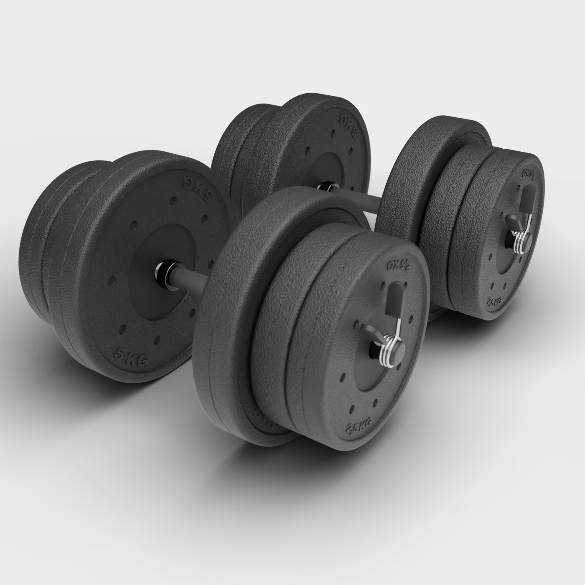
Notre rendu · même montage, poignée noire
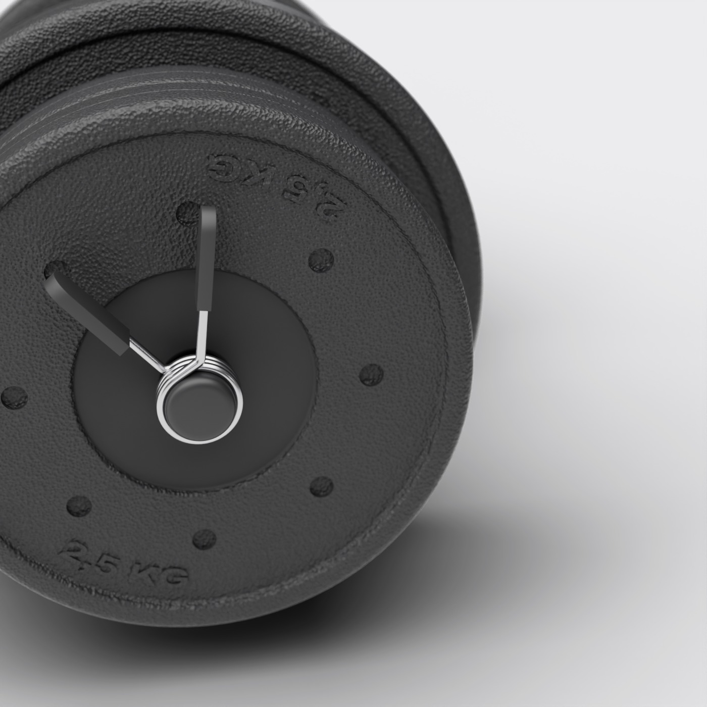
Le bout de l'haltère : le disque, la pince, l'embout noir
L'haltère
les disques sablés, le marquage en relief, notre pince en 25 mm
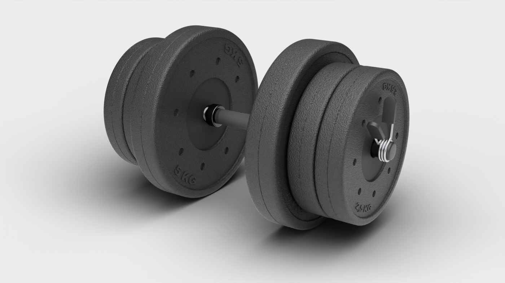
Poignée C, tout noir (comme ta photo)
Poignée B, tout acier
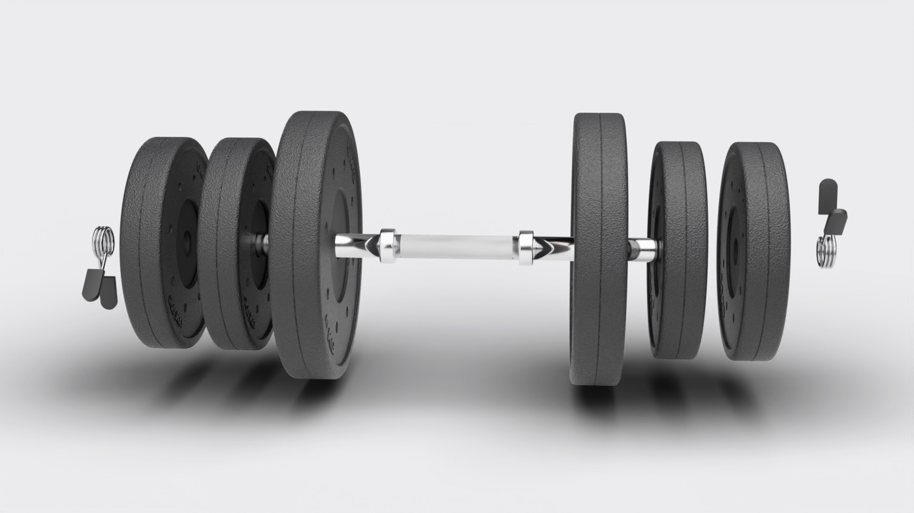
Éclaté : la poignée, trois disques par côté, une pince à chaque bout
La poignée
trois finitions, comme la barre olympique
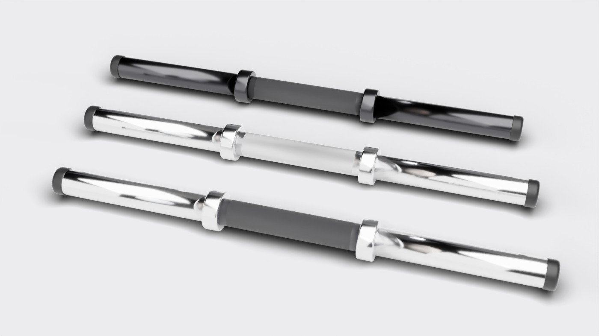
De devant à derrière : A (prise noire, acier), B (tout acier), C (tout noir)
Les disques
les trois poids, puis les textures et le marquage
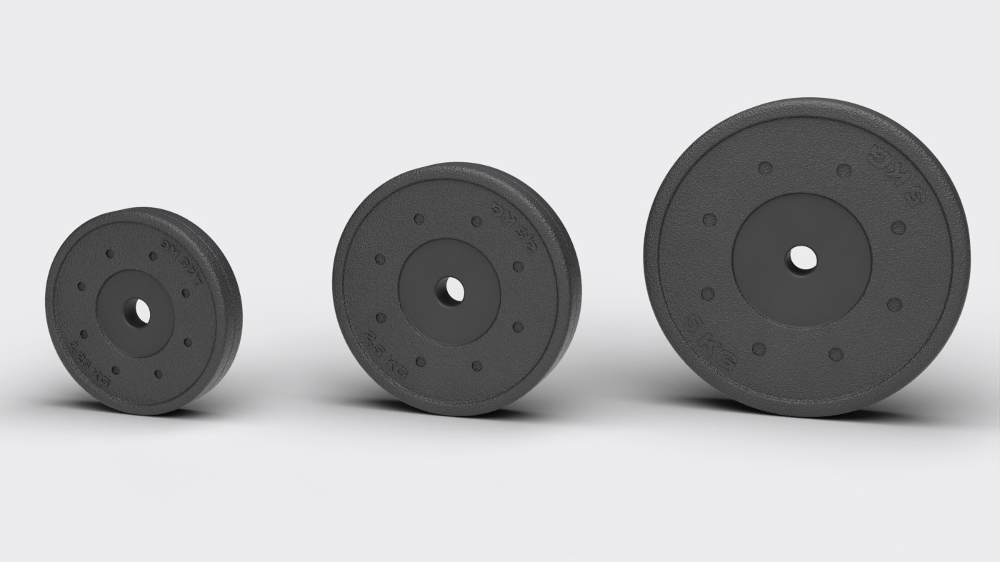
1,25 kg · 2,5 kg · 5 kg
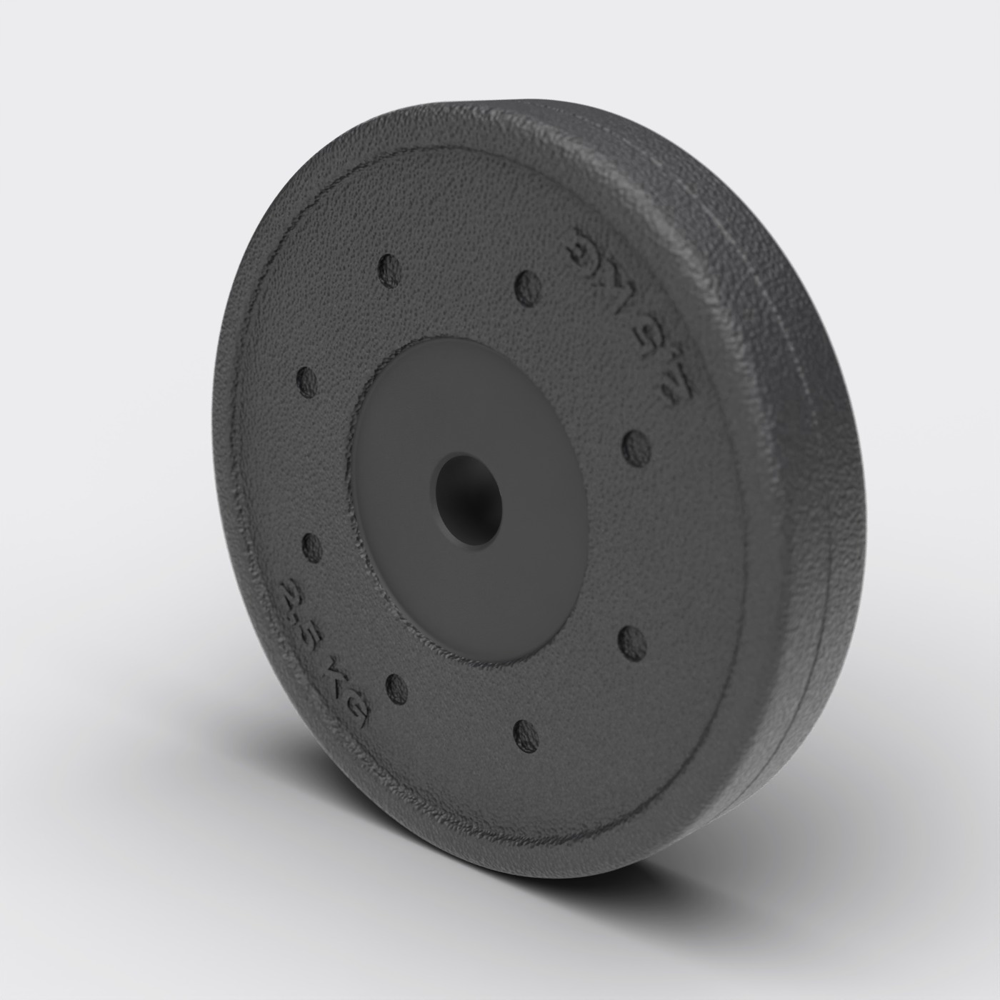
Sablée (comme ta photo), marquage en relief
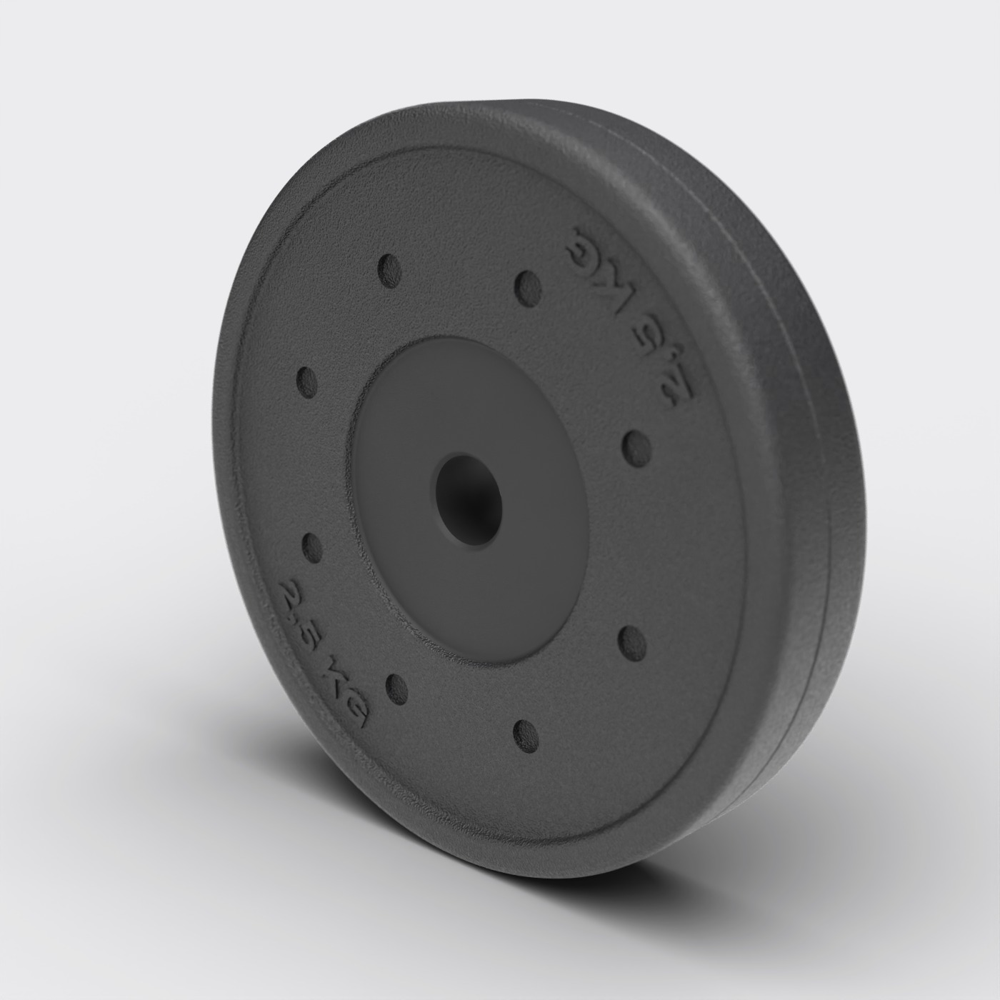
Grain fin (comme nos haltères ronds)
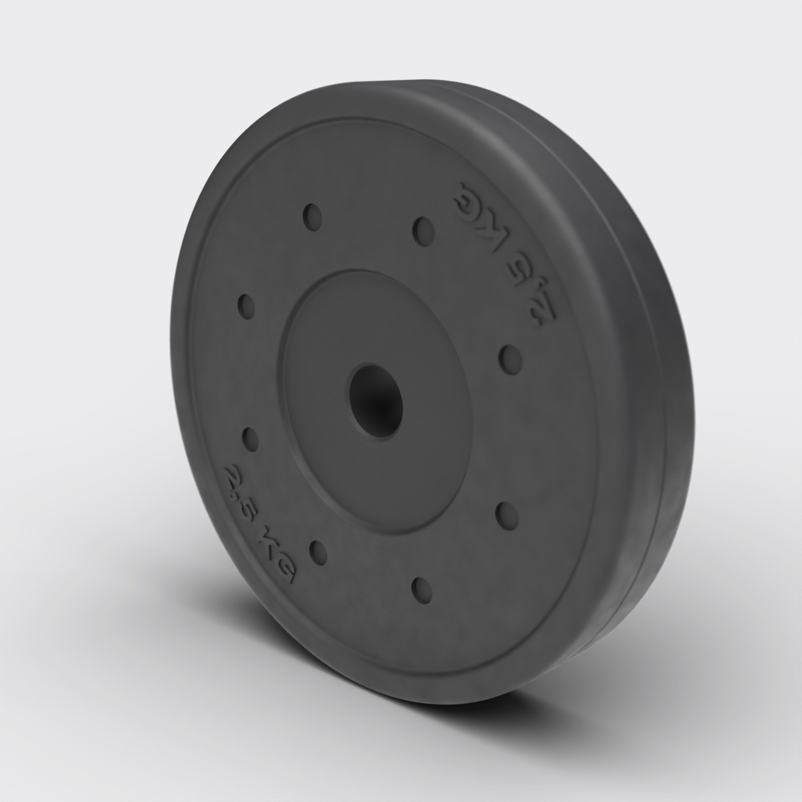
Moulée (comme nos disques)
Sablée, marquage blanc
Les coloris
les huit couleurs de la charte
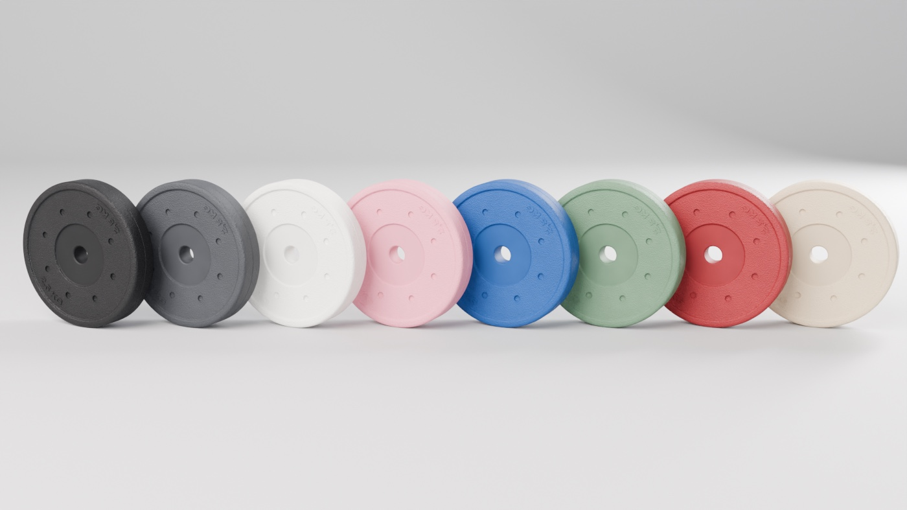
Les huit coloris (disque de 2,5 kg)
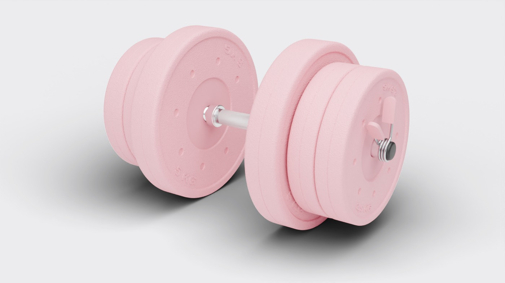
Rose : les disques et les gaines de la pince
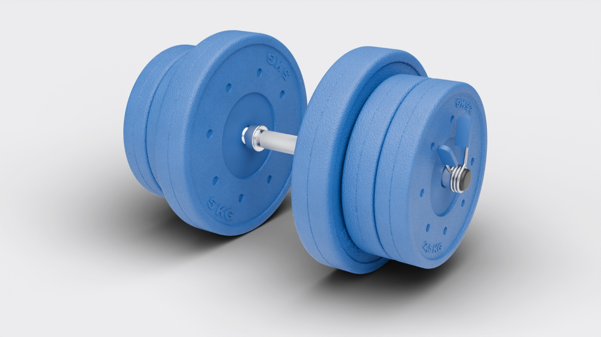
Bleu